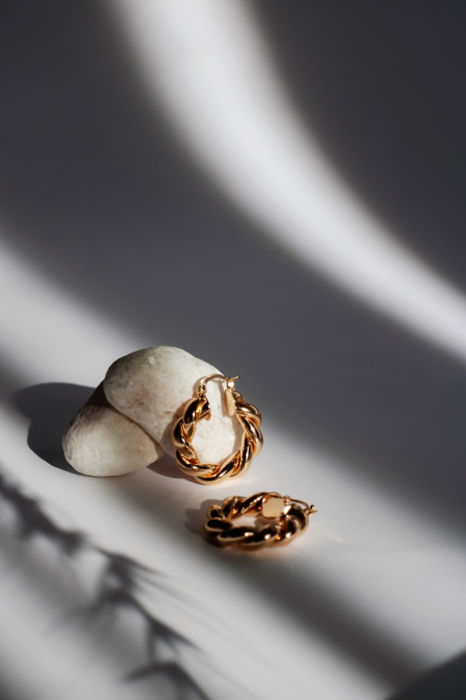

开始拼豆前，先搞清楚珠子尺寸、品牌差异和必备工具，能避免很多新手踩坑。

1. 珠子尺寸
- Midi（5mm）：最主流，几乎所有免费图案默认这个尺寸。
- Mini（约 2.5–2.6mm）：细节更高，适合小饰品。
- Maxi / Biggie（约 10mm）：儿童友好，大颗粒。

2. 必备工具清单
- Pegboard（拼豆板）
- 熨烫纸 / 烘焙纸
- 普通家用熨斗
- 镊子（可选）
- 收纳盒
3. 过程视频（本地模板）
下方已写好本地视频播放器。你下载视频后，把文件命名为 perler-intro.mp4 放到 assets/videos/ 即可自动播放。
当前为本地视频模板。若文件不存在，可暂时使用下方 YouTube 嵌入作为参考：